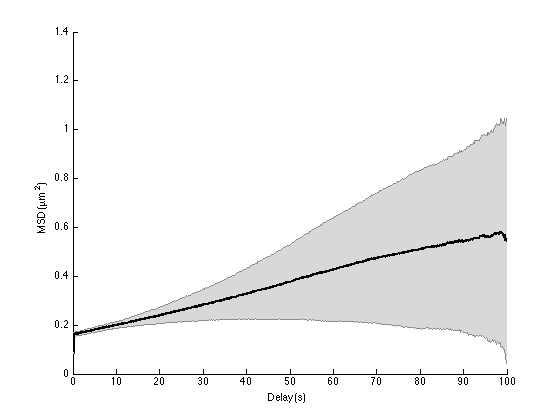
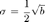
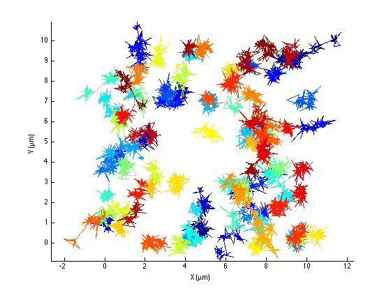

Impact of tracking and localization error.
Contents
Unless you have a very bright signal and are extremely cautious during image acquisition and image analysis, localization and tracking errors will affect the analysis. We propose in this chapter to reproduce with numerical simulations some results properly derived in Xavier Michalet article [4].
We will first introduce large localization error in detections (a single particle detected in one frame). The X,Y coordinates reported by the detector is off by a certain amount, gaussian distributed. We will see how it impacts the MSD curves. Then we will add other kind of tracking mistakes, such as missing particles and bad linking.
close all clear all
Simulating localization errors.
We now assume that particles detected have a bad localization: their XY position is wrong by a certain offset.
% Typical bad localization error. Large compared to typical displacement. BAD_XY_TYPICAL_OFFSET = 0.2; % µm
Here is how we build the tracks, taking from the previous example.
SPACE_UNITS = 'µm'; TIME_UNITS = 's'; N_PARTICLES = 100; N_TIME_STEPS = 500; N_DIM = 2; % 2D D = 1e-3; % µm^2/s - diffusion coefficient dT = 0.2; % s, SIZE = 8; % µm k = sqrt(N_DIM * D * dT); tracks = cell(N_PARTICLES, 1); for i_spot = 1 : N_PARTICLES % Time time = (0 : N_TIME_STEPS-1)' * dT; % Initial position X0 = SIZE .* rand(1, N_DIM); % Integrate uncorrelated displacement dX = k * randn(N_TIME_STEPS, N_DIM); dX(1, :) = X0; X = cumsum(dX, 1); % Deal with incorrect detection bad_dx = BAD_XY_TYPICAL_OFFSET * randn(N_TIME_STEPS, N_DIM); X = X + bad_dx; % Store tracks{i_spot} = [ time X]; end fprintf('Generated %d tracks over %d time steps.\n', N_PARTICLES, N_TIME_STEPS)
Generated 100 tracks over 500 time steps.
MSD analysis with localization error.
Let's see how our analysis holds against this threat:
ma = msdanalyzer(2, SPACE_UNITS, TIME_UNITS); ma = ma.addAll(tracks); ma = ma.computeMSD; ma.plotMeanMSD(gca, true);
Computing MSD of 100 tracks... Done.
We see that on average, the MSD curve is still a straight line, but that it has a large offset at dt=0, dt being the delay between two position measurements. Luckily, this is the only impact of localization error on the MSD curve: it just offsets the it by a certain amount.
It is important therefore that the analysis of MSD curves ignores the point at dt=0, and that we do a linear fit with an offset MSD = a × dt + b:
ma = ma.fitMSD; good_enough_fit = ma.lfit.r2fit > 0.8; Dmean = mean( ma.lfit.a(good_enough_fit) ) / 2 / ma.n_dim; Dstd = std( ma.lfit.a(good_enough_fit) ) / 2 / ma.n_dim; fprintf('Found D = %.3e ± %.3e (mean ± std, N = %d)\n', ... Dmean, Dstd, sum(good_enough_fit));
Fitting 100 curves of MSD = f(t), taking only the first 25% of each curve... Done. Found D = 1.109e-03 ± 4.620e-04 (mean ± std, N = 83)
So this is what our analyzer does. The localization error does not impact the slope measurement, and the value we derive for the diffusion coefficient is correct.
It is actually amazing that we can still derive a good estimate for the diffusion coefficient with that error magnitude. The mean displacement caused by the physical process of diffusion is given by k, calculated above. The localization error we simulated is:
fprintf('Simulated localization error magnitude: %.3e %s.\n', ... BAD_XY_TYPICAL_OFFSET, SPACE_UNITS); fprintf('Typical brownian displacement magnitude: %.3e %s.\n', ... k, SPACE_UNITS);
Simulated localization error magnitude: 2.000e-01 µm. Typical brownian displacement magnitude: 2.000e-02 µm.
For a larger localization error, the estimate of D degrades. Try for instance to make the Brownian movement smaller by setting the time interval to 50 ms, and you will get an estimate of D biased towards to high values.
Estimating the localization error magnitude.
Xavier Michalet and others noticed that the offset b could be used to estimate the localization error magnitude. In [4], he reports that the dynamic localization uncertainty is given by (see equations 12 and 14 in [4]):

If we apply it to our fits, we get:
bmean = mean( ma.lfit.b(good_enough_fit) ); sigma_locmean = 0.5 * sqrt(bmean); % Standard deviation derived by variance composition sigma_sigma_locmean = 0.5 * std( ma.lfit.b(good_enough_fit) ) / sigma_locmean; fprintf('Localization error estimated to be s = %.3e ± %.3e (mean ± std, N = %d),\n', ... sigma_locmean, sigma_sigma_locmean, sum(good_enough_fit)); fprintf('to compare to the simulated value: %.3e.\n', BAD_XY_TYPICAL_OFFSET);
Localization error estimated to be s = 1.988e-01 ± 2.817e-02 (mean ± std, N = 83), to compare to the simulated value: 2.000e-01.
In practice however, the localization error has various experimental sources. In particular, Xavier Michalet notes that including a camera finite exposure time as a source of localization error (you image the particle as it moves) can yield negative offset, which renders our estimation clueless.
More realistic tracks.
Let us simulate more tracks, introducing some tweaks that make them more resembling to experimentally measured tracks:
- they don't start at the same time and don't last for the same duration. Obviously, this should not affect the results if the analyzer is well written;
- they have some gaps: some detections are missing for some frames. Again, this should not impact the mean value of the diffusion coefficient, but merely change the confidence interval for the short delays;
- the detector fails sometimes: some of the particles are incorrectly localized: the measured XY position as an offset which does not correspond to reality. This is what we just simulated above, except that only a proportion of detections are affected;
- the tracker fails sometimes: he links together in a same track two different particles that are close. The tracks might jump from one particle to another, generating fallacious displacements.
Simulation parameters
close all clear all % Number of particles to simulate N_PARTICLES = 100; % Probability to miss a detection. P_GAPS = 0.3; % Probability that a XY position is incorrect. P_BAD_XY = 0.2; % Typical bad localization error. BAD_XY_TYPICAL_OFFSET = 0.2; % µm % Probability that a track actually follows two particles. P_BAD_TRACK = 0.2; % Typical distance between the 2 particles erroneously tracked together BAD_TRACK_DISTANCE = 0.5; % N_TIME_STEPS = 500; N_DIM = 2; % 2D kT = 4.2821e-21; % 37ºC D = 1e-3; % µm^2/s dT = 0.2; % s SIZE = 10; % µm
Tracks generation
tracks = cell(N_PARTICLES, 1); k = sqrt(N_DIM * D * dT); n_missed = 0; n_bad_xy = 0; n_bad_track = 0; for i_spot = 1 : N_PARTICLES % Time time_steps = max(1, round(N_TIME_STEPS + N_TIME_STEPS/4*randn)); time = (0 : time_steps-1)' * dT + dT * floor(N_TIME_STEPS / 4 * rand); % Initial position X0 = SIZE .* rand(1, N_DIM); % Integrate uncorrelated displacement dX = k * randn(time_steps, N_DIM); dX(1, :) = X0; X = cumsum(dX, 1); % First deal with incorrect detection incorrect_detection = rand(time_steps, 1) < P_BAD_XY; n_incorrect_detection = sum(incorrect_detection); bad_dx = BAD_XY_TYPICAL_OFFSET * randn(n_incorrect_detection, N_DIM); X(incorrect_detection, :) = X(incorrect_detection, :) + bad_dx; n_bad_xy = n_bad_xy + n_incorrect_detection; % Deal with two particle confused as one track. bad_track = rand < P_BAD_TRACK; if bad_track % It is a bad track. So at a random time, all the X coordinates % will actually follow another particle, which is off by a certain % distance: switch_time = 1 + floor(rand * (time_steps-1)); dx_other_particle = BAD_TRACK_DISTANCE * randn(1, N_DIM); dx_other_particle = repmat(dx_other_particle, [(time_steps-switch_time+1) 1]); X(switch_time:end, :) = X(switch_time:end, :) + dx_other_particle; n_bad_track = n_bad_track + 1; end % Deal with missing frames missing_frames = rand(time_steps, 1) < P_GAPS; X(missing_frames, :) = []; time(missing_frames) = []; n_missed = n_missed + sum(missing_frames); % Store tracks{i_spot} = [ time X]; end fprintf('Generated %d tracks, with:\n', N_PARTICLES) fprintf(' - %d missed detections\n', n_missed) fprintf(' - %d bad detections\n', n_bad_xy) fprintf(' - %d bad tracks\n', n_bad_track)
Generated 100 tracks, with: - 15424 missed detections - 10388 bad detections - 25 bad tracks
How the tracks look like
Let's use @msdanalyzer to quickly see how the simulated trajectories look like:
ma = msdanalyzer(2, 'µm', 's'); ma = ma.addAll(tracks); ma.plotTracks; ma.labelPlotTracks;
Basic MSD analysis.
Even with the mess caused by 100 particles, we clearly see that some trajectories have some pathological behavior. The localization error magnitude is 10 times the Brownian displacement magniture, and the tracking error put together tracks that are awat by roughly 25 times the typical displacement.
We shall not expect to find the same accuracy in our estimates. In paricular, the MSD curves should be biased towards higher slopes because of the bad tracks. Switching from one particle to another induces erroneously large displacements that will contribute to large slopes.
Indeed, if we repeat the analysis we did on the previous page, we still retrieve the correct order of magnitude, but the estimated value of D departs from the simulated one:
ma = ma.computeMSD; figure ma.plotMeanMSD(gca, true) ma = ma.fitMSD; good_enough_fit = ma.lfit.r2fit > 0.8; Dmean = mean( ma.lfit.a(good_enough_fit) ) / 2 / ma.n_dim; Dstd = std( ma.lfit.a(good_enough_fit) ) / 2 / ma.n_dim; fprintf('Found D = %.3e ± %.3e (mean ± std, N = %d)\n', ... Dmean, Dstd, sum(good_enough_fit));
Computing MSD of 100 tracks... Done. Fitting 100 curves of MSD = f(t), taking only the first 25% of each curve... Done. Found D = 1.525e-03 ± 1.398e-03 (mean ± std, N = 81)